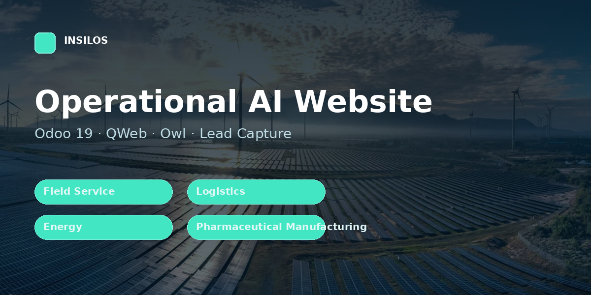

Home, platform, solutions, industries, resources, company, demo request and media credits pages.
Validated public demo form, spam honeypot, backend request management and queued email notification.
Interactive industry explorer and agent workflow simulation.
IntersectionObserver reveals, responsive layouts and reduced-motion support.